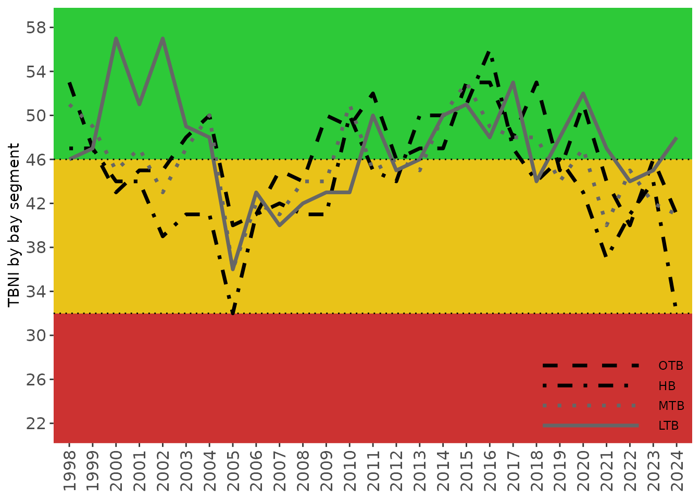

Background
The Tampa Bay Nekton Index (TBNI) [1,2]) is a multimetric assessment method that quantifies the ecological health of the nekton community in Tampa Bay. The index provides a complementary approach to evaluating environmental condition that is supported by other assessment methods currently available for Tampa Bay (e.g., water quality report card, Benthic index, etc.). The tbeptools package includes several functions described below to import data required for the index, analyze the data to calculate metrics and index scores, and plot the results to view trends over time. Each of the functions are described in detail below.
The TBNI uses catch data from the Florida Fish and Wildlife Conservation Commission (FWC) Fish and Wildlife Research Institute’s (FWRI) Fisheries-Independent Monitoring (FIM) program. Catch results from a center-bag seine have the longest and most consistent record in the FIM database and were used to develop the TBNI. These include counts and taxa identification for individuals caught in near shore areas, generally as early recruits, juveniles, and smaller-bodied nekton. All fish and selected invertebrates are identified to the lowest possible taxon (usually species), counted, and a subset are measured. Current protocols were established in 1998 and TBNI estimates are unavailable prior to this date.
Data import and included datasets
Data required for calculating TBNI scores can be imported into the current R session using the read_importfim() function. This function downloads the latest FIM file from an FTP site if the data have not already been downloaded to the location specified by the input arguments.
To download the data, first create a character path for the location of the file. If one does not exist, specify a desired location and name for the downloaded file. Here, we want to put the file on the desktop in our home directory and name it fimdata.csv.
csv <- '~/Desktop/fimdata.csv'
fimdata <- read_importfim(csv)Running the above code will return the following error:
#> Error in read_importfim(csv) : file.exists(csv) is not TRUEWe get an error message from the function indicating that the file is not found. This makes sense because the file doesn’t exist yet, so we need to tell the function to download the latest file. This is done by changing the download_latest argument to TRUE (the default is FALSE).
fimdata <- read_importfim(csv, download_latest = T)
#> File ~/Desktop/fimdata.csv does not exist, replacing with downloaded file...
#> trying URL 'ftp://ftp.floridamarine.org/users/fim/tmac/NektonIndex/TampaBay_NektonIndexData.csv' length 11083878 bytes (10.6 MB)Now we get an indication that the file on the server is being downloaded. When the download is complete, we’ll have the data downloaded and saved to the fimdata object in the current R session.
If we try to run the function again after downloading the data from the server, we get the following message. This check is done to make sure that the data are not unnecessarily downloaded if the current matches the file on the server.
fimdata <- read_importfim(csv, download_latest = T)
#> File is current..Every time that tbeptools is used to work with the FIM data, read_importfim() should be used to import the data. You will always receive the message File is current... if your local file matches the one on the server. However, new data are regularly collected and posted on the server. If download_latest = TRUE and your local file is out of date, you will receive the following message:
#> Replacing local file with current...After the data are successfully imported, you can view them from the assigned object:
head(fimdata)
#> # A tibble: 6 x 17
#> Reference Sampling_Date Zone Grid NODCCODE bay_segment Year Month Total_N
#> <chr> <date> <chr> <int> <chr> <chr> <dbl> <dbl> <dbl>
#> 1 TBM19980… 1998-01-09 A 31 8747020… OTB 1998 1 15
#> 2 TBM19980… 1998-01-09 A 31 8805020… OTB 1998 1 2
#> 3 TBM19980… 1998-01-09 A 62 6177010… OTB 1998 1 1
#> 4 TBM19980… 1998-01-09 A 63 9998000… OTB 1998 1 0
#> 5 TBM19980… 1998-01-09 A 65 8820020… OTB 1998 1 1
#> 6 TBM19980… 1998-01-09 A 65 8826020… OTB 1998 1 1
#> # … with 8 more variables: ScientificName <chr>, Include_TB_Index <chr>,
#> # Hab_Cat <chr>, Est_Cat <chr>, Est_Use <chr>, Feeding_Cat <chr>,
#> # Feeding_Guild <chr>, Selected_Taxa <chr>The imported data are formatted for calculating the TBNI. The columns include a Reference for the FIM sampling site, the sampling date, sampling Zone, sampling Grid, NODCCODE as a unique identifier for species, sample year, sample month, total catch as Total_N, scientific name, a column indicating if the species is included in the index, and several columns indicating species-specific information required for the metrics. For the final columns, a separate lookup table is provided in the package that is merged with the imported FIM data. This file, tbnispp, can be viewed anytime the package is loaded:
head(tbnispp)
#> NODCCODE ScientificName Include_TB_Index Hab_Cat Est_Cat
#> 1 8860030201 Acanthostracion quadricornis Y B MS
#> 2 8858010000 Achiridae spp. N B ES
#> 3 8858030202 Achirus lineatus Y B ES
#> 4 8804040401 Adinia xenica Y B ES
#> 5 8713070101 Aetobatus narinari Y B MS
#> 6 8739010101 Albula vulpes Y P MS
#> Est_Use Feeding_Cat Feeding_Guild Selected_Taxa
#> 1 O TS ZB N
#> 2 O TS ZB N
#> 3 O TS ZB N
#> 4 O TS ZP N
#> 5 F TS ZB N
#> 6 S TS ZB YThe read_importfim() function also matches the catch data with FIM sampling stations by appropriate bay segments. This is done with an additional lookup table included in the package. The fimstations table is a simple features object with georeferenced spatial coordinates.
mapview(fimstations, zcol = 'bay_segment')The read_importfim() function processes the observed data as needed for the TBNI, including merging the rows with the tbnispp and fimstations data. Once imported, the metrics and scores can be calculated.
Calculating metrics and TBNI scores
Metrics and scores for the Tampa Bay Nekton Index can be calculated using two functions. The anlz_tbnimet() function calculates all raw metrics and the anlz_tbniscr() function calculates scored metrics and the final TBNI score. Both functions use the imported and formatted FIM data as input.
The TBNI includes five metrics that were sensitive to stressor gradients and provide unique information about Nekton community response to environmental conditions. The metrics include:
NumTaxa: Species richnessBenthicTaxa: Species richness for benthic taxaTaxaSelect: Number of “selected” species (i.e., commercially and/or recreationally important)NumGuilds: Number of trophic guildsShannon: Shannon Diversity (H)
Raw metrics are first calculated from the observed data and then scaled to a standard score from 0 - 10 by accounting for expected relationships to environmental gradients and 5th/95th percentiles of the distributions. The final TBNI score is the summed average of the scores ranging from 0 - 100.
The raw metrics, scored metrics, and final TBNI score is returned with the anlz_tbniscr() function.
tbniscr <- anlz_tbniscr(fimdata)
head(tbniscr)
#> # A tibble: 6 x 16
#> Reference Year Month Season bay_segment TBNI_Score NumTaxa ScoreNumTaxa
#> <chr> <dbl> <dbl> <chr> <chr> <dbl> <dbl> <dbl>
#> 1 TBM19980… 1998 1 Winter OTB 18 2 2
#> 2 TBM19980… 1998 1 Winter OTB 14 1 1
#> 3 TBM19980… 1998 1 Winter OTB 0 0 0
#> 4 TBM19980… 1998 1 Winter OTB 20 2 2
#> 5 TBM19980… 1998 1 Winter MTB 46 4 4
#> 6 TBM19980… 1998 1 Winter MTB 24 2 2
#> # … with 8 more variables: BenthicTaxa <dbl>, ScoreBenthicTaxa <dbl>,
#> # TaxaSelect <dbl>, ScoreTaxaSelect <dbl>, NumGuilds <dbl>,
#> # ScoreNumGuilds <dbl>, Shannon <dbl>, ScoreShannon <dbl>The five metrics chosen for the TBNI were appropriate for the Tampa Bay dataset and were selected from a larger pool of candidate metrics. All potential metrics can be calculated using the anlz_tbnimet() function. These metrics can be used in standalone assessments or for developing a Nekton index outside of Tampa Bay. The argument all = TRUE must be used to return all metrics, otherwise only the selected five for the TBNI are returned.
tbnimet <- anlz_tbnimet(fimdata, all = T)
head(tbnimet)
#> # A tibble: 6 x 37
#> Reference Year Month Season bay_segment NumTaxa NumIndiv Shannon Simpson
#> <chr> <dbl> <dbl> <chr> <chr> <dbl> <dbl> <dbl> <dbl>
#> 1 TBM19980… 1998 1 Winter OTB 2 17 0.362 1.26
#> 2 TBM19980… 1998 1 Winter OTB 1 1 0 1
#> 3 TBM19980… 1998 1 Winter OTB 0 0 0 0
#> 4 TBM19980… 1998 1 Winter OTB 2 2 0.693 2
#> 5 TBM19980… 1998 1 Winter MTB 4 11 1.16 2.81
#> 6 TBM19980… 1998 1 Winter MTB 2 5 0.500 1.47
#> # … with 28 more variables: Pielou <dbl>, TaxaSelect <dbl>, NumGuilds <dbl>,
#> # TSTaxa <dbl>, TGTaxa <dbl>, BenthicTaxa <dbl>, PelagicTaxa <dbl>,
#> # OblTaxa <dbl>, MSTaxa <dbl>, ESTaxa <dbl>, SelectIndiv <dbl>, Taxa90 <dbl>,
#> # TSAbund <dbl>, TGAbund <dbl>, BenthicAbund <dbl>, PelagicAbund <dbl>,
#> # OblAbund <dbl>, ESAbund <dbl>, MSAbund <dbl>, Num_LR <dbl>, PropTG <dbl>,
#> # PropTS <dbl>, PropBenthic <dbl>, PropPelagic <dbl>, PropObl <dbl>,
#> # PropMS <dbl>, PropES <dbl>, PropSelect <dbl>Plotting results
The TBNI scores can be viewed as annual averages using the show_tbniscr(), show_tbniscrall() and show_tbnimatrix() functions. The show_tbniscr() creates a line graph of values over time for each bay segment, whereas the show_tbniscrall() function plots an overall average across bay segments over time. The show_tbnimatrix() plots the annual bay segment averages as categorical values in a conventional “stoplight” graphic. The input to each function is the output from the anlz_tbniscr() function.
show_tbniscr(tbniscr)
show_tbniscrall(tbniscr)
show_tbnimatrix(tbniscr)
Each of the plots can also be produced as plotly interactive plots by setting plotly = TRUE inside each function.
show_tbniscr(tbniscr, plotly = T)
show_tbniscrall(tbniscr, plotly = T)
show_tbnimatrix(tbniscr, plotly = T)The breakpoints for the categorical outcomes of the TBNI scores shown by the colors in each graph are based on the 33rd and 50th percentiles of the distribution of all TBNI scores calculated for Tampa Bay. This plotting option is provided for consistency with existing TBEP reporting tools, e.g., the water quality report card returned by show_matrix(). The categorical outcomes serve as management guidelines each year for activities to support environmental resources of the Bay: Stay the Course, Caution, and On Alert [3].
The graphs returned by the plotting functions are ggplot objects that can be further modified. They can be combined below using patchwork in a single graphic showing the trends over time as both categorical outcomes in the matrix and continuous scores in the bottom plot.
p1 <- show_tbnimatrix(tbniscr, txtsz = NULL, rev = TRUE, position = 'bottom') +
scale_y_continuous(expand = c(0,0), breaks = c(1998:2018)) +
coord_flip() +
theme(axis.text.x = element_blank())
p2 <- show_tbniscr(tbniscr)
p1 + p2 + plot_layout(ncol = 1, heights = c(0.3, 1))
References
[1] M.N. Schrandt, T.C. MacDonald, Tampa Bay Nekton Index, Final Report, Tampa Bay Estuary Program, St. Petersburg, Florida, 2018. https://drive.google.com/file/d/1oWm-xosC-mb9e8GnO4BmtJRNXjfEb4H_/view?usp=drivesdk.
[2] M.N. Schrandt, T.C. MacDonald, 2018 Multimetric Index of Nekton Health for Tampa Bay, FL, Tampa Bay Estuary Program, St. Petersburg, Florida, 2019. https://drive.google.com/file/d/1EVBUFGcmhvp3Yu1L2YGNQuxY-cqO0zyI/view?usp=drivesdk.
[3] Janicki Environmental, Inc., Tracking Chlorophyll-a and Light Attenuation in Tampa Bay: Application to 2004 Data, Tampa Bay Estuary Program, St. Petersburg, Florida, 2005. https://drive.google.com/file/d/1GNSb5i_x_WSxe8VKz9FtqZ7fjWcnVqHO/view?usp=drivesdk.